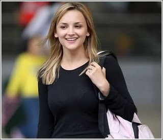

Personality
Who is this woman?

This is Rachael Leigh Cook - famous because of a massive internet hoax which has caused half the world to believe that she is Jennifer Katherine Gates, daughter of Microsoft founder Bill Gates.
view question •
view answer •
return to grid